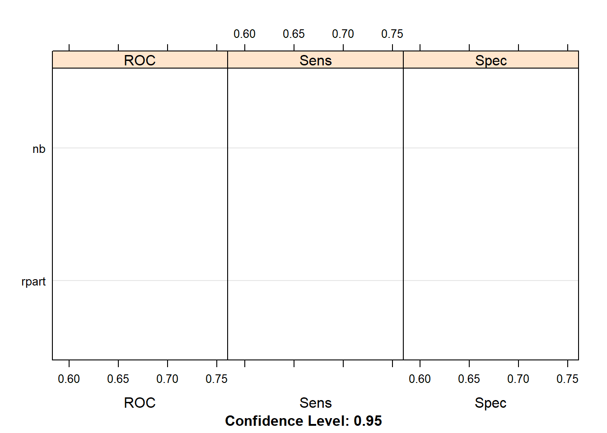
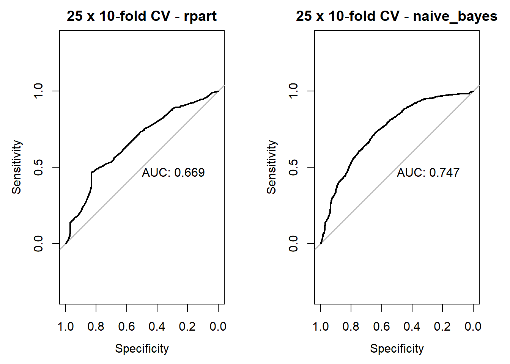
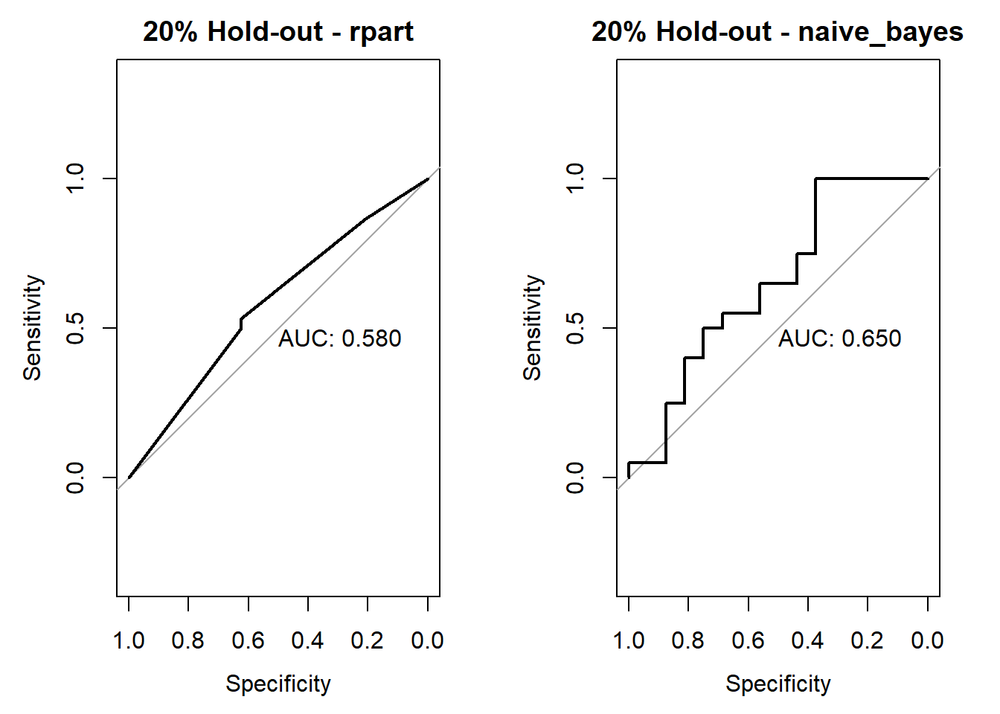
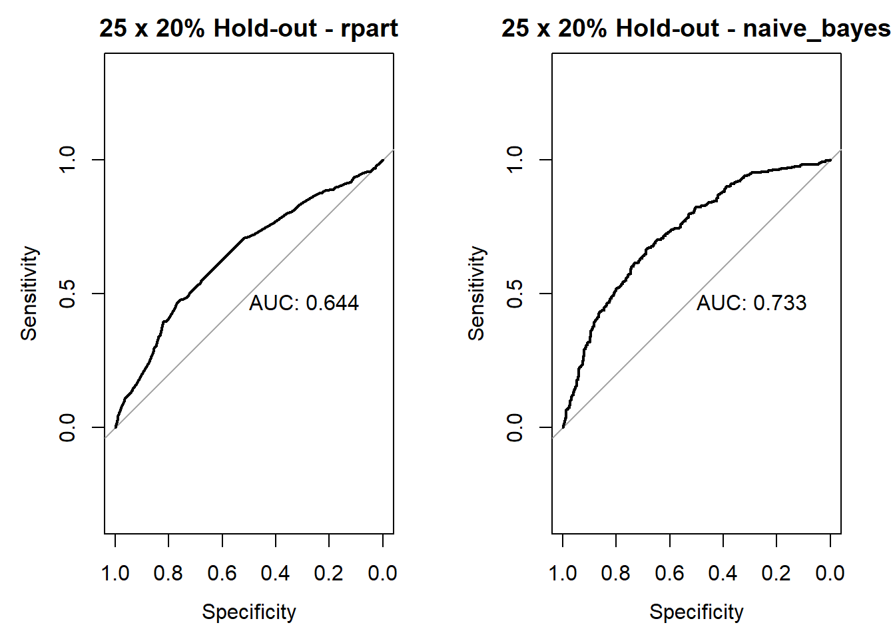
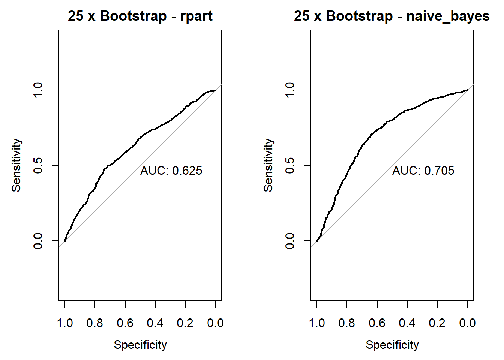
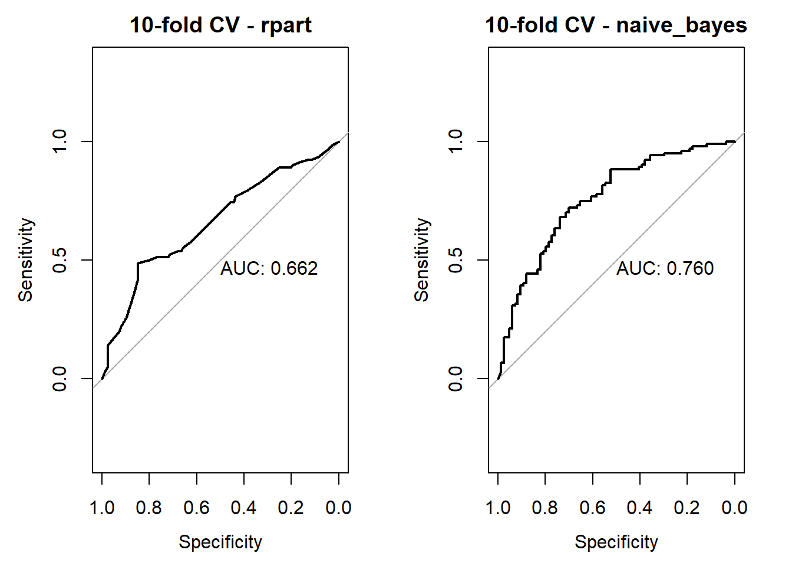

4.2 Crossvalidation
2020-02-11
continuation of the previous classe. All the code was provided by the professor.
# loading and preparing the data
dataset <- read.csv("2.UploadedData/dataR2.csv")
# Define Classification as factor
dataset$Classification <- factor(dataset$Classification, levels=1:2, labels=c("Control", "Patient"))
# Holdout a validation set, by defining the indices of the training set
training.index <- createDataPartition(dataset$Classification, p=0.8, list=FALSE)
validation <- dataset[-training.index,]
dataset <- dataset[training.index,]Dimensions (should be 116 observations and 10 variables)
## [1] 94 104.2.1 Test harness
- Define the metric
metric <- "ROC"- Define the estimation method
control <- trainControl(...)- Train the model with chosen metric and method (output is factor with “Yes” or “No”)
fit.model <- train(output ~ ., data=dataset, method="nnet", metric=metric, trControl=control)- Plot ROC curve
plot.roc(fit.model$pred$obs,fit.model$pred$Yes, main=fit.model$method, print.auc=T)
4.2.1.1 Run algorithm using 20% hold-out validation
control <- trainControl(method="LGOCV", p=0.8, number=1,
summaryFunction=twoClassSummary,
classProbs=T,
savePredictions = TRUE)
set.seed(7)
fit.cart.hold <- train(Classification ~ ., data=dataset, method="rpart", metric=metric, trControl=control)
set.seed(7)
fit.nb.hold <- train(Classification ~ ., data=dataset, method="naive_bayes", metric=metric, trControl=control)Summarize accuracy of models
fit.models <- list(rpart=fit.cart.hold, nb=fit.nb.hold)
results <- resamples(fit.models)
summary(results)##
## Call:
## summary.resamples(object = results)
##
## Models: rpart, nb
## Number of resamples: 1
##
## ROC
## Min. 1st Qu. Median Mean 3rd Qu. Max. NA's
## rpart 0.59375 0.59375 0.59375 0.59375 0.59375 0.59375 0
## nb 0.66250 0.66250 0.66250 0.66250 0.66250 0.66250 0
##
## Sens
## Min. 1st Qu. Median Mean 3rd Qu. Max. NA's
## rpart 0.625 0.625 0.625 0.625 0.625 0.625 0
## nb 0.750 0.750 0.750 0.750 0.750 0.750 0
##
## Spec
## Min. 1st Qu. Median Mean 3rd Qu. Max. NA's
## rpart 0.6 0.6 0.6 0.6 0.6 0.6 0
## nb 0.6 0.6 0.6 0.6 0.6 0.6 0ROC curves for models
par(mfrow=c(1,2))
rocs <- lapply(fit.models, function(fit){plot.roc(fit$pred$obs,fit$pred$Patient, main=paste("20% Hold-out -",fit$method), debug=F, print.auc=T)})
Compare accuracy of models

4.2.1.2 Run algorithm using multiple 20% hold-out validation
control <- trainControl(method="LGOCV", p=0.8, number=25,
summaryFunction=twoClassSummary,
classProbs=T,
savePredictions = TRUE)
set.seed(7)
fit.cart.mhold <- train(Classification ~ ., data=dataset, method="rpart", metric=metric, trControl=control)
set.seed(7)
fit.nb.mhold <- train(Classification ~ ., data=dataset, method="naive_bayes", metric=metric, trControl=control)Summarize accuracy of models
fit.models <- list(rpart=fit.cart.mhold, nb=fit.nb.mhold)
results <- resamples(fit.models)
summary(results)##
## Call:
## summary.resamples(object = results)
##
## Models: rpart, nb
## Number of resamples: 25
##
## ROC
## Min. 1st Qu. Median Mean 3rd Qu. Max. NA's
## rpart 0.4625 0.59375 0.6875 0.67575 0.775 0.9250 0
## nb 0.4875 0.73750 0.7875 0.77000 0.825 0.9375 0
##
## Sens
## Min. 1st Qu. Median Mean 3rd Qu. Max. NA's
## rpart 0.25 0.500 0.625 0.605 0.75 1 0
## nb 0.50 0.625 0.750 0.705 0.75 1 0
##
## Spec
## Min. 1st Qu. Median Mean 3rd Qu. Max. NA's
## rpart 0.4 0.6 0.8 0.708 0.8 0.9 0
## nb 0.4 0.6 0.7 0.664 0.8 0.9 0ROC curves for models
par(mfrow=c(1,2))
rocs <- lapply(fit.models, function(fit){plot.roc(fit$pred$obs,fit$pred$Patient, main=paste("25 x 20% Hold-out -",fit$method), debug=F, print.auc=T)})
Compare accuracy of models
4.2.1.3 Run algorithm using 10-fold cross validation
control <- trainControl(method="cv", number=10,
summaryFunction=twoClassSummary,
classProbs=T,
savePredictions = TRUE, repeats = 1)
set.seed(7)
fit.cart.cv <- train(Classification ~ ., data=dataset, method="rpart", metric=metric, trControl=control)
set.seed(7)
fit.nb.cv <- train(Classification ~ ., data=dataset, method="naive_bayes", metric=metric, trControl=control)Summarize accuracy of models
fit.models <- list(rpart=fit.cart.cv, nb=fit.nb.cv)
results <- resamples(fit.models)
summary(results)##
## Call:
## summary.resamples(object = results)
##
## Models: rpart, nb
## Number of resamples: 10
##
## ROC
## Min. 1st Qu. Median Mean 3rd Qu. Max. NA's
## rpart 0.52 0.7260417 0.775 0.7524167 0.825 0.9 0
## nb 0.56 0.6875000 0.825 0.8010000 0.900 1.0 0
##
## Sens
## Min. 1st Qu. Median Mean 3rd Qu. Max. NA's
## rpart 0.25 0.50 0.50 0.52 0.60 0.75 0
## nb 0.40 0.75 0.75 0.77 0.95 1.00 0
##
## Spec
## Min. 1st Qu. Median Mean 3rd Qu. Max. NA's
## rpart 0.2 0.80 0.8 0.7433333 0.825 1 0
## nb 0.2 0.45 0.7 0.6600000 0.800 1 0ROC curves for models
par(mfrow=c(1,2))
rocs <- lapply(fit.models, function(fit){plot.roc(fit$pred$obs,fit$pred$Patient, main=paste("10-fold CV -",fit$method), debug=F, print.auc=T)})
Compare accuracy of models
4.2.1.4 Run algorithm using 25 times 10-fold cross validation
control <- trainControl(method="repeatedcv", number=10,
summaryFunction=twoClassSummary,
classProbs=T,
savePredictions = TRUE, repeats = 25)
set.seed(7)
fit.cart.rcv <- train(Classification ~ ., data=dataset, method="rpart", metric=metric, trControl=control)
set.seed(7)
fit.nb.rcv <- train(Classification ~ ., data=dataset, method="naive_bayes", metric=metric, trControl=control)Summarize accuracy of models
fit.models <- list(rpart=fit.cart.rcv, nb=fit.nb.rcv)
results <- resamples(fit.models)
summary(results)##
## Call:
## summary.resamples(object = results)
##
## Models: rpart, nb
## Number of resamples: 250
##
## ROC
## Min. 1st Qu. Median Mean 3rd Qu. Max. NA's
## rpart 0.25 0.65 0.7345833 0.7315767 0.8333333 1 0
## nb 0.15 0.70 0.8000000 0.7823867 0.9000000 1 0
##
## Sens
## Min. 1st Qu. Median Mean 3rd Qu. Max. NA's
## rpart 0 0.5 0.60 0.6010 0.75 1 0
## nb 0 0.5 0.75 0.7188 1.00 1 0
##
## Spec
## Min. 1st Qu. Median Mean 3rd Qu. Max. NA's
## rpart 0.0 0.6 0.8 0.7442667 0.8 1 0
## nb 0.2 0.6 0.6 0.6762667 0.8 1 0ROC curves for models
par(mfrow=c(1,2))
rocs <- lapply(fit.models, function(fit){plot.roc(fit$pred$obs,fit$pred$Patient, main=paste("25 x 10-fold CV -",fit$method), debug=F, print.auc=T)})
Compare accuracy of models

4.2.1.5 Run algorithm using leave-one-out validation
control <- trainControl(method="LOOCV",
summaryFunction=twoClassSummary,
classProbs=T,
savePredictions = TRUE)
set.seed(7)
fit.cart.loo <- train(Classification ~ ., data=dataset, method="rpart", metric=metric, trControl=control)
set.seed(7)
fit.nb.loo <- train(Classification ~ ., data=dataset, method="naive_bayes", metric=metric, trControl=control)Summarize accuracy of models
fit.models <- list(rpart=fit.cart.loo, nb=fit.nb.loo)
#results <- resamples(fit.models)
#summary(results)
summary(fit.models)| Length | Class | Mode | |
|---|---|---|---|
| rpart | 23 | train | list |
| nb | 23 | train | list |
ROC curves for models
par(mfrow=c(1,2))
rocs <- lapply(fit.models, function(fit){plot.roc(fit$pred$obs,fit$pred$Patient, main=paste("Leave-One-Out -",fit$method), debug=F, print.auc=T)})Compare accuracy of models

4.2.1.6 Run algorithm using bootstrap validation
control <- trainControl(method="boot_all", number=25,
summaryFunction=twoClassSummary,
classProbs=T,
savePredictions = TRUE)
set.seed(7)
fit.cart.boot <- train(Classification ~ ., data=dataset, method="rpart", metric=metric, trControl=control)
set.seed(7)
fit.nb.boot <- train(Classification ~ ., data=dataset, method="naive_bayes", metric=metric, trControl=control)Summarize accuracy of models
fit.models <- list(rpart=fit.cart.boot, nb=fit.nb.boot)
results <- resamples(fit.models)
summary(results)##
## Call:
## summary.resamples(object = results)
##
## Models: rpart, nb
## Number of resamples: 25
##
## ROC
## Min. 1st Qu. Median Mean 3rd Qu. Max. NA's
## rpart 0.3777778 0.5798319 0.6729323 0.6546427 0.7182540 0.7924837 0
## nb 0.5079365 0.7074074 0.7625418 0.7416113 0.8134921 0.8791209 0
##
## Sens
## Min. 1st Qu. Median Mean 3rd Qu. Max. NA's
## rpart 0.3333333 0.5000000 0.5833333 0.5986555 0.7058824 1.0000000 0
## nb 0.2666667 0.6153846 0.7142857 0.6817272 0.7500000 0.9230769 0
##
## Spec
## Min. 1st Qu. Median Mean 3rd Qu. Max. NA's
## rpart 0.2666667 0.5882353 0.6521739 0.6419404 0.7222222 1.0000000 0
## nb 0.4736842 0.5714286 0.7058824 0.6707410 0.7391304 0.9444444 0ROC curves for models
par(mfrow=c(1,2))
rocs <- lapply(fit.models, function(fit){plot.roc(fit$pred$obs,fit$pred$Patient, main=paste("25 x Bootstrap -",fit$method), debug=F, print.auc=T)})
Compare accuracy of models

4.2.2 Make predictions
Estimate skill of GLM Step AIC on the validation dataset
par(mfrow=c(1,1))
predictions.prob <- predict(fit.nb.boot, validation, type="prob")
predictions <- predict(fit.nb.boot, validation, type="raw")
confusionMatrix(predictions, validation$Classification)## Confusion Matrix and Statistics
##
## Reference
## Prediction Control Patient
## Control 8 6
## Patient 2 6
##
## Accuracy : 0.6364
## 95% CI : (0.4066, 0.828)
## No Information Rate : 0.5455
## P-Value [Acc > NIR] : 0.2622
##
## Kappa : 0.2903
##
## Mcnemar's Test P-Value : 0.2888
##
## Sensitivity : 0.8000
## Specificity : 0.5000
## Pos Pred Value : 0.5714
## Neg Pred Value : 0.7500
## Prevalence : 0.4545
## Detection Rate : 0.3636
## Detection Prevalence : 0.6364
## Balanced Accuracy : 0.6500
##
## 'Positive' Class : Control
##